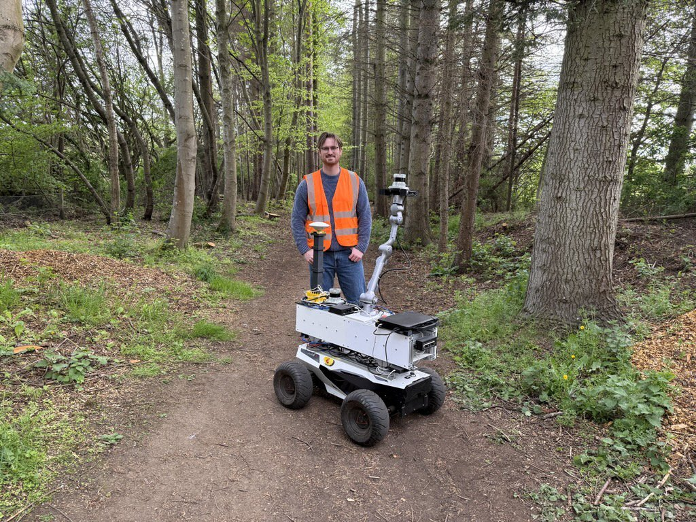
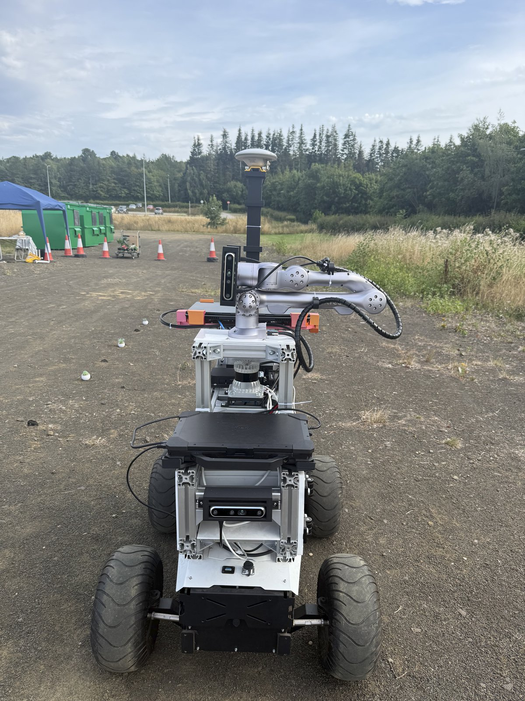
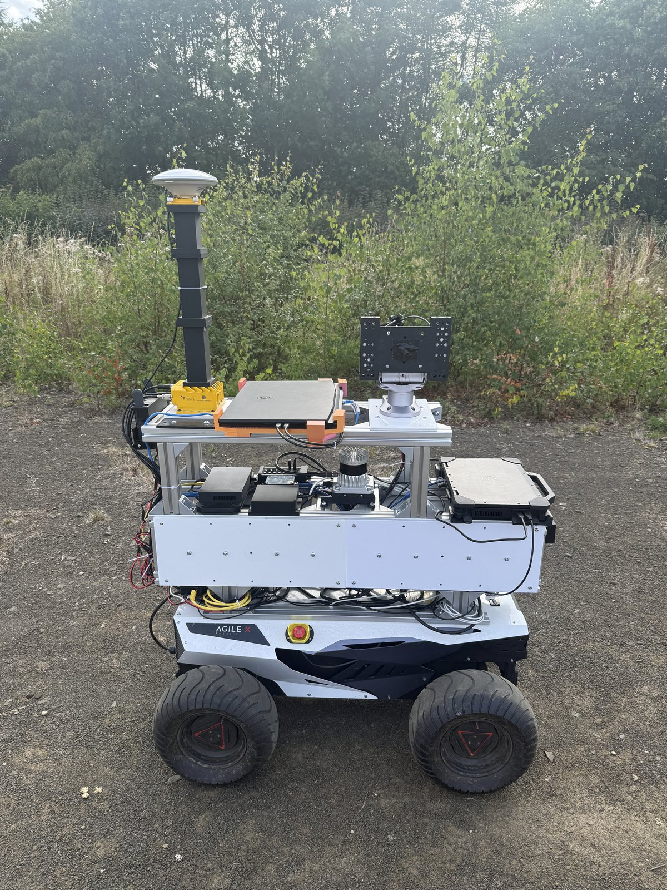

Ciaran Johnson
Final year PhD student, Edinburgh Centre for Robotics
I work on agricultural robotics, building perception systems that let robots measure plants in the field, and turning those measurements into models that predict how a crop will grow.
Research
Robots that measure how crops grow
Plant breeding and crop management both depend on measuring plants accurately, repeatedly, and at scale. Today that measurement is largely manual: slow, destructive, and impossible to repeat often enough to capture how a plant actually develops over a season.
My research puts that job onto robots. I develop perception and machine learning methods that recover the three-dimensional structure of plants from field data, extract the traits breeders and growers care about, and track those traits over time. The aim is a pipeline that runs end to end in real growing conditions, taking raw sensor data collected in the field through to per-plant phenotypes, and on to prognosis models that forecast yield and health early enough to act on.
Field phenotyping
Automating the measurement of plant traits from robot-collected imagery, in place of destructive manual sampling.
3D plant perception
Reconstructing plant and canopy structure in three dimensions under the occlusion and clutter of real field conditions.
Prognosis models
Using time-series phenotypes to forecast crop development, yield and health before the outcome is visible.
Selected work
Dataset paperForestYear3D
A year-long dual-LiDAR point cloud dataset for long-term forest robotics: 528 repeated traversals of the same forest corridor between June 2025 and May 2026, captured with a mobile manipulator carrying a LiDAR on its arm.
Read more →Platform
ALFRED
ALFRED — the Autonomous Leaf and Forest Research Exploration Device — is the robot behind ForestYear3D. It is a dual-LiDAR mobile manipulator: an AgileX Hunter 2.0 Ackermann base carrying a Unitree Z1 six-degree-of-freedom arm, with one Ouster OS1-32 fixed to the base and a second mounted on the end-effector.
That second LiDAR is the point of the machine. A sensor bolted to a chassis sees whatever the chassis drives past; a sensor on the end of an arm can be moved while the robot drives, reaching over understorey and around trunks to pick up the branch and canopy structure a fixed mount never gets. ALFRED was built to test whether that actually helps, which is why the dataset compares fixed-arm, random, and deterministic arm-motion protocols over the same forest corridor for a full year.


Platform
ALFRED 2.0
ALFRED 2.0 is the successor to ALFRED, and a separate robot: it is the platform for my crop work rather than the forest dataset. Rather than relying on datasets gathered under controlled conditions, it lets me record plants where they actually grow, on the same plots, repeatedly through a season.
Building the platform myself meant the hardware could be shaped around the measurement problem instead of the other way around. Sensor placement, the way the robot moves through a crop row, and how reliably it returns to the same plants on each visit all directly determine whether the resulting reconstructions are good enough to compare over time.

